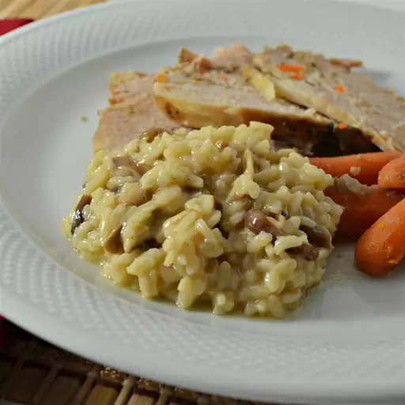

Mushroom Risotto

Description
You got the rice, the mushrooms, the wine, I mean it's risotto, what more could you want? Fuggetaboutit.
Ingredients
- 1 ounce dried porcini mushrooms
- 1 cup hot water
- 1 (32 ounce) carton beef stock
- ¼ cup olive oil
- 3 cloves garlic
- 1 tsp. dried rosemary
- salt & pepper to taste
- 1 cup white wine, divided
- ¼ cup butter, divided
- 1 shallot, chopped
- 1¾ cups arborio rice
- ⅓ cup parmesan cheese, grated
Directions
- Place porcini mushrooms in a bowl and cover with hot water. Let soak until soft, about 1 hour. Drain, reserving soaking liquid. Squeeze mushrooms to remove excess water and roughly chop.
- Bring beef stock to a boil in a saucepan. Reduce heat to low and cover to keep warm.
- Heat 3 tablespoons oil in a skillet over medium heat. Add garlic cloves; cook until fragrant, about 2 minutes. Add mushrooms; cook and stir until soft, 5 to 6 minutes. Season with rosemary, salt, and pepper. Discard garlic cloves; pour in 1/2 cup wine. Increase heat to medium-high and simmer until wine reduces, 3 to 5 minutes.
- Heat remaining 1 tablespoon oil with 2 tablespoons butter in a saucepan over medium-low heat. Cook and stir shallot until soft, about 3 minutes. Cook and stir Arborio rice until toasted and fragrant, about 3 minutes. Pour in remaining 1/2 cup wine. Simmer until wine is absorbed, about 3 minutes.
- Ladle 1/3 of the warm stock into the saucepan; cook and stir until absorbed. Ladle in remaining stock and reserved soaking liquid in small amounts and cook, stirring constantly, until risotto is tender and creamy, 15 to 18 minutes.
- Remove risotto from the heat; stir in remaining 2 tablespoons butter and Parmesan cheese. Let stand for 3 to 5 minutes before serving.